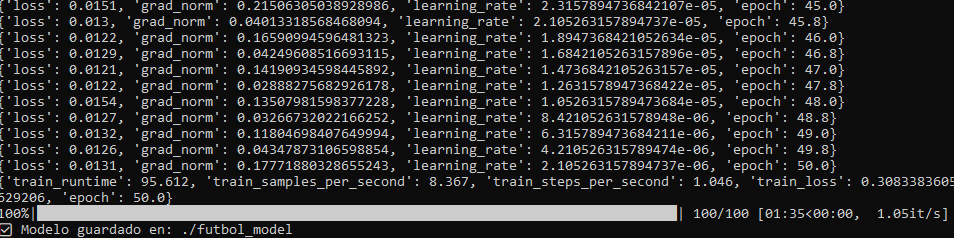

Captura 1 · Logs Finales
Métricas finales del entrenamiento Qwen2

loss 0.0131
RTX 4070 Ti
Torch 2.5.1
epoch 50
Esta captura inicial muestra los logs finales del proceso de fine-tuning de un modelo Qwen2 usando Unsloth en una NVIDIA GeForce RTX 4070 Ti bajo Windows con Torch 2.5.1 y CUDA 12.1. Cada línea registra métricas clave por paso: 'loss' (pérdida, que mide el error del modelo y baja de 0.0151 a 0.0131, indicando convergencia exitosa), 'grad_norm' (norma del gradiente, que controla la estabilidad del descenso de gradiente, manteniéndose baja ~0.04-0.17), 'learning_rate' (tasa de aprendizaje, decreciendo linealmente de 2.3e-05 a 2.1e-06 para evitar oscilaciones finales) y 'epoch' (avance hasta la época 50.0). Al final, resume train_runtime (95.6s), samples/steps por segundo, train_loss global (0.308) y confirma 50 épocas completadas.